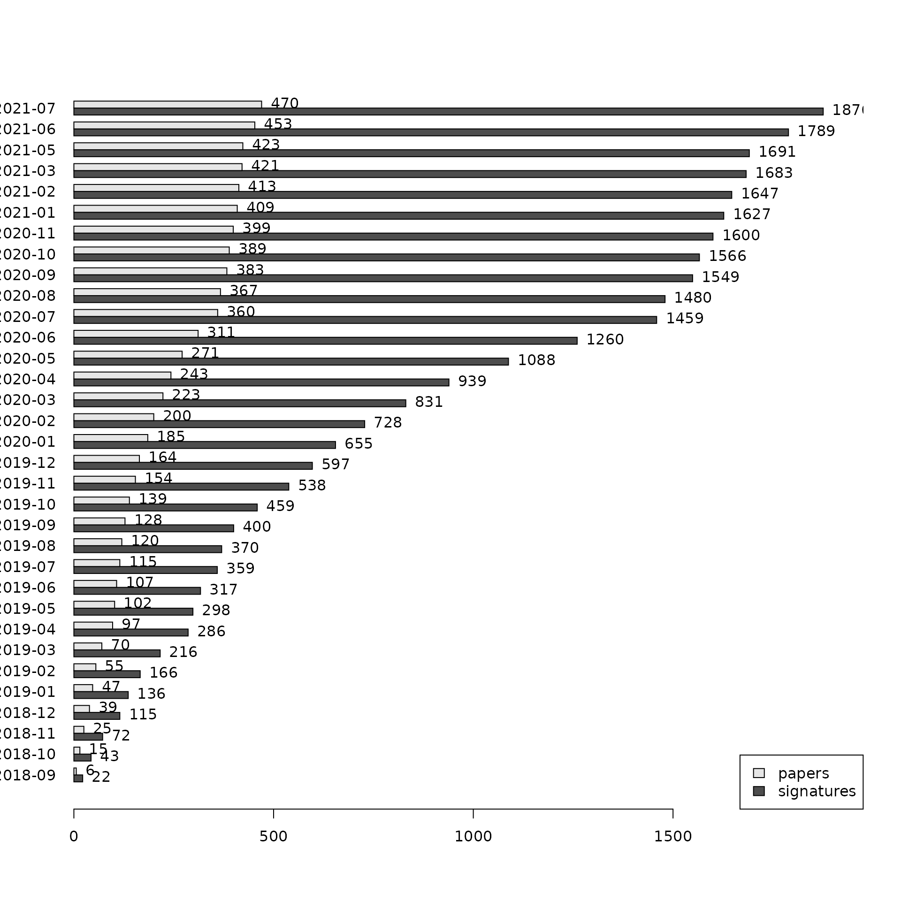
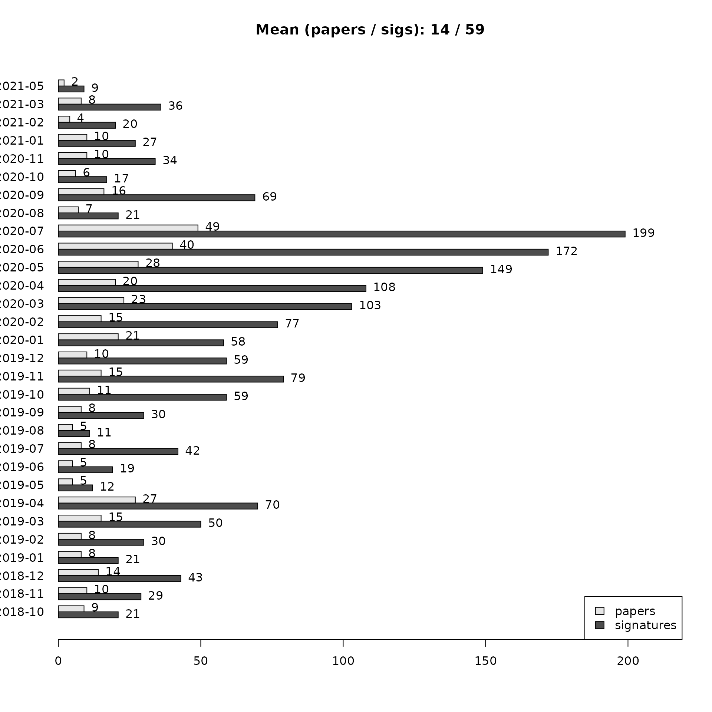

Reading data
Get bulk export from bugsigdb.org:
full.dat <- bugsigdbr::importBugSigDB()## Using cached version from 2021-08-28 05:06:46
dim(full.dat)## [1] 2073 45
colnames(full.dat)## [1] "Study" "Study design"
## [3] "PMID" "DOI"
## [5] "URL" "Authors"
## [7] "Title" "Journal"
## [9] "Year" "Abstract"
## [11] "Experiment" "Location of subjects"
## [13] "Host species" "Body site"
## [15] "Condition" "Group 0 name"
## [17] "Group 1 name" "Group 1 definition"
## [19] "Group 0 sample size" "Group 1 sample size"
## [21] "Antibiotics exclusion" "Sequencing type"
## [23] "16s variable region" "Sequencing platform"
## [25] "Statistical test" "Significance threshold"
## [27] "MHT correction" "LDA Score above"
## [29] "Matched on" "Confounders controlled for"
## [31] "Pielou" "Shannon"
## [33] "Chao1" "Simpson"
## [35] "Inverse Simpson" "Richness"
## [37] "Signature page name" "Source"
## [39] "Curated date" "Curator"
## [41] "Revision editor" "Description"
## [43] "Abundance in Group 1" "MetaPhlAn taxon names"
## [45] "NCBI Taxonomy IDs"Curation output
Number of papers and signatures curated:
## [1] 514
nrow(full.dat)## [1] 2073Publication date of the curated papers:
pmids <- pmids[!is.na(pmids)]
pubyear1 <- pmid2pubyear(pmids[1:361])
pubyear2 <- pmid2pubyear(pmids[362:length(pmids)])
pubyear <- c(pubyear1, pubyear2)
head(cbind(pmids, pubyear))## pmids pubyear
## [1,] "28038683" "2016"
## [2,] "28173873" "2017"
## [3,] "27015276" "2016"
## [4,] "27625705" "2016"
## [5,] "23071781" "2012"
## [6,] "28467925" "2017"
tab <- table(pubyear)
tab <- tab[-length(tab)]
tab <- tab[order(as.integer(names(tab)))]
df <- data.frame(year = names(tab), papers = as.integer(tab))
ggbarplot(df, x = "year", y = "papers",
label = TRUE, fill = "steelblue",
ggtheme = theme_bw())
Stripping empty signatures:
# contains empty UP / DOWN rows
# more realistic estimation of number of signatures curated
dat <- stripEmptySignatures(full.dat)
nrow(dat)## [1] 2004Papers containing only empty UP and DOWN signatures (under curation?):
## [1] 32295867 32937864 32415070 32728349 33903709 33851179 33833065 33603076
## [9] 31917273 22986438 30714619 32978483 31887116 30057153Progress over time:
dat[,"Curated date"] <- as.character(lubridate::dmy(dat[,"Curated date"]))
plotProgressOverTime(dat)
plotProgressOverTime(dat, diff = TRUE)
Stratified by curator:
npc <- stratifyByCurator(dat)
plotCuratorStats(dat, npc)
Number of revised signatures:
table(dat[,"Revision editor"])##
## Chloe
## 2
## Chloe,Claregrieve1
## 2
## Claregrieve1
## 129
## Claregrieve1,Fatima
## 5
## Cynthia Anderson
## 33
## Cynthia Anderson,LGeistlinger,WikiWorks743
## 2
## Cynthia Anderson,Lwaldron,WikiWorks743
## 1
## Fatima
## 3
## Fatima,Kwekuamoo,WikiWorks743
## 2
## Fatima,LGeistlinger,Rimsha,WikiWorks743
## 1
## Fatima,Lwaldron,WikiWorks743
## 3
## Fatima,Madhubani Dey
## 2
## Fatima,Rimsha,WikiWorks743
## 1
## Fatima,Tislam
## 3
## Fatima,WikiWorks743
## 50
## Fatima,Yu Wang
## 6
## Gina
## 3
## Itslanapark
## 20
## Kwekuamoo
## 38
## Kwekuamoo,WikiWorks743
## 1
## Lorakasselman
## 2
## Lwaldron
## 7
## Lwaldron,Madhubani Dey
## 1
## Lwaldron,WikiWorks743
## 21
## Madhubani Dey
## 44
## Manuela
## 11
## Samara.Khan
## 43
## Tislam
## 18
## Valentina
## 2
## WikiWorks,WikiWorks743,WikiWorks753
## 1
## WikiWorks743
## 1542
## WikiWorks743,WikiWorks753
## 1Distances between signatures
The calcPairwiseOverlaps function works quickly on all of bugsigdb currently, but makeDist is slow and surely could be improved for efficiency. For now, use only nasal samples:
dat_subset <- dat[dat$`Body site` %in% "nasal cavity", ]
sigs_subset <- getSignatures(dat_subset)
paircomp <- calcPairwiseOverlaps(sigs_subset)
jdist <- makeDist(paircomp, "jaccard")Create a dendrogram of Jaccard dissimilarities (1.0 has no overlap, 0.0 are identical signatures).